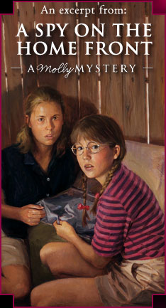

Molly encounters a mysterious black car and finds trouble at the house of her summertime friend, Anna Schulz…
As Molly mounted her bike, she stared curiously in the direction the car had gone. Who were those men? she wondered. Men in Weston didn’t dress like that. And why were they in such a hurry?
Anna will know, Molly decided.
When she reached the farmhouse, Mr. and Mrs. Schulz were standing on the front porch. Mrs. Schulz’s face was hidden in her husband’s shoulder. Mr. Schulz’s arms were around his wife’s shoulders, comforting her. He was staring down the lane, an angry expression on his face. Molly bit her lip. She knew Mr. Schulz wasn’t looking at her so fiercely. That meant he was watching after the men.
“Anna’s in the barn,” Mr. Schulz called.
“Thanks,” Molly called back. Just then Mrs. Schulz lifted her head. Her eyes were red and puffy.
What’s going on? Molly wondered. Was there more bad news about the Kruegers? Standing up, she pumped hard on the pedals until she reached the barn, whose huge doors were wide open.
“Anna?” Molly leaned her back against the door frame. A handful of speckled hens pecked and scratched in the doorway. “It’s me, Molly.”
When there was no reply, Molly whistled like a bobwhite, the girls’ signal to each other. Slowly, she walked into the shadowy barn, scattering the hens. Hay bales were stacked high on one side. On the other side was an empty corncrib. Molly bet Anna was in their fort in the hayloft.
Why wasn’t she answering? Was she playing a game of hide-and-seek? Or did it have something to do with her mother crying and the strange men? “Anna?” Molly’s voice was softer this time. Pigeons cooed in the rafters. One blasted into the air, the whirring of its wings startling Molly. She tilted back her head. “Anna? Are you in the loft?”
There was no answer. Then a faint bobwhite whistle drifted in from overhead. Molly hurried to the wooden ladder. Hand over hand she climbed until her head poked into the loft. Molly could see the top of Anna’s head peeking over the walls of their fort, which was made of hay bales stacked two deep.
“Why didn’t you answer me?” Molly asked as she clambered onto the wooden floor. She walked to the fort, stooping so she wouldn’t bump her head on the rafters. Anna was huddled on the quilt they’d spread over a pile of straw in the middle of their fort. She wore a red-checked sleeveless shirt and baggy shorts. Her blond hair stuck out in stubby pigtails.
When Molly crawled through the gap in the bales, she saw that Anna’s cheeks were tear-streaked. Anna had been crying, too.
“What’s wrong?” Molly asked as she sat down beside her friend.
“Nothing.” Quickly, Anna wiped her tears with the back of her hand.
“Then why are you crying?”
“I’m not crying.”
“Your mother was crying,” Molly said softly.
“No, she wasn’t.” Anna retorted. With a frown, she turned away.
Molly’s eyes widened. Why was Anna so upset? And why was she trying to pretend that nothing was wrong? “She was too crying. And your father looked mad. Did you get more bad news about your friends the Kruegers?”
Anna shook her head no.
Molly tried a different tack. “Then who were the men in the car?”
Anna’s shoulders stiffened. “Nobody.”
“Well, those ‘nobodies’ ran me off your lane,” Molly went on.
Anna shrugged as if she didn’t care. Molly bit her lip. She’d never seen her friend act this way before.
Not sure what else to say, Molly picked at a piece of straw and waited. Maybe Anna would get tired of the silent treatment and tell her what was going on. Molly sighed. Last night they’d had so much fun swimming. And before saying good-bye, they’d made plans to collect cans. Now, for some reason, her friend wasn’t up to Molly’s company.
Molly sat up. “I guess I’d better go home. We’ll collect cans tomorrow. Um, I hope you’ll feel better soon.”
Anna nodded, but she didn’t look up.
Jumping on the bike, Molly pedaled away from the barn and past the house. Mr. and Mrs. Schulz were no longer on the porch, and the front door was shut.
With a puzzled frown, Molly started down the lane toward home. Anna might deny that the two men had visited, but Molly knew they had. That meant her friend was hiding something.
Something that made Mr. Schulz angry. Something that made Anna and her mother cry.
As Molly pedaled along the rutted land, she couldn’t stop thinking about the letter, the two men, her friend Anna, and the mysterious goings-on at the Schulzes.